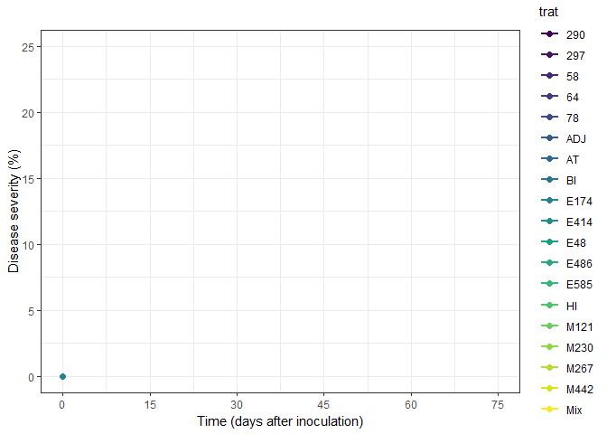
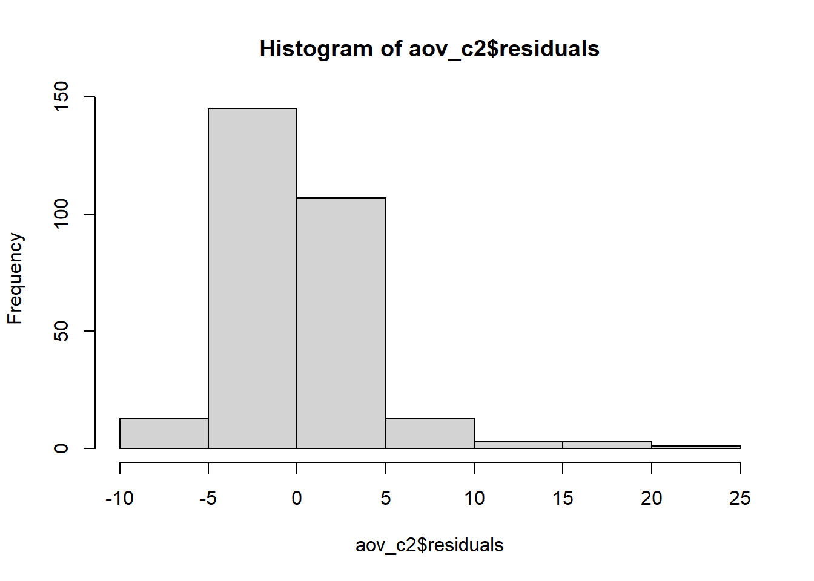
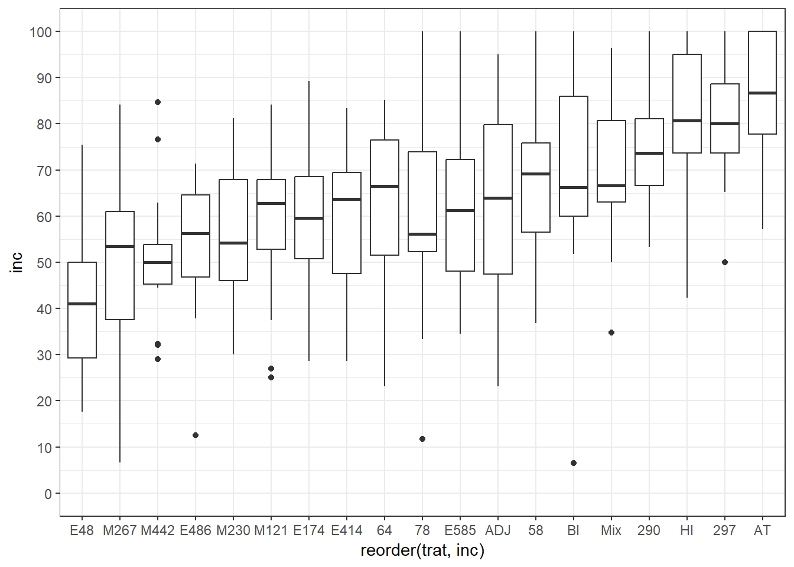
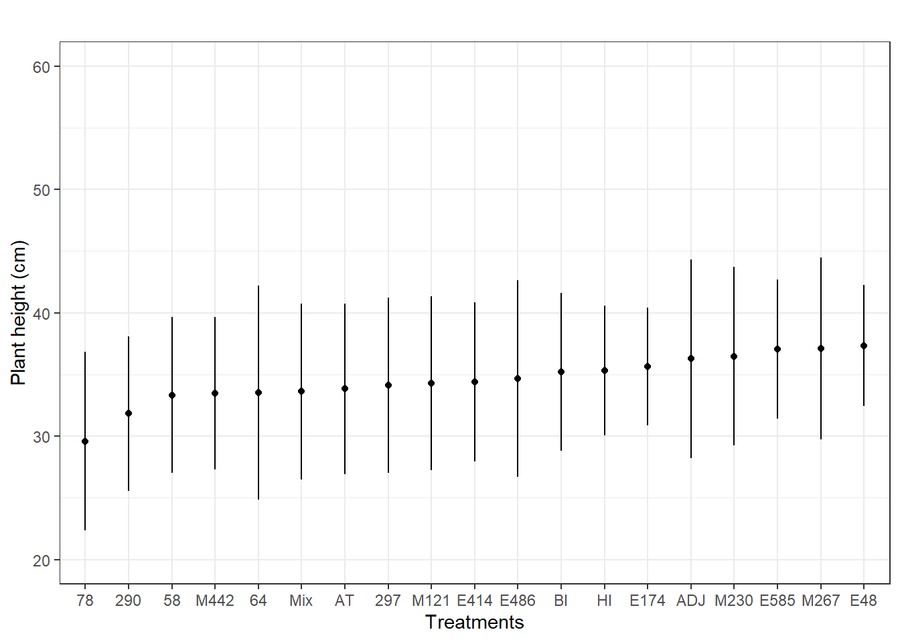
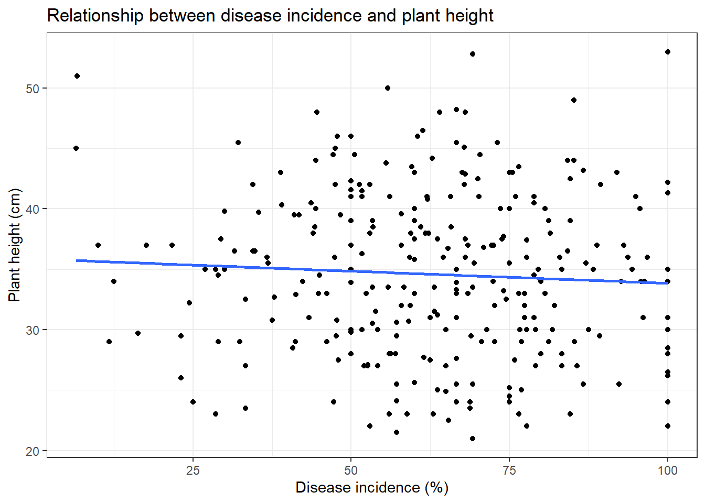

library(tidyverse)
library(googlesheets4)
library(gsheet)
library(dplyr)
library(ggplot2)
library(gganimate)
library(animate)
library(gifski)
library(performance)
library(DHARMa)
library(ExpDes.pt)
library(epifitter)Análise de dados do experimento de biocontrole da ferrugem do café
Introdução
O banco de dados analisado traz os resultados de um experimento realizado com trezentas plantas de café com o intuíto de testar o efeito de isolados fúngicos encontrados associados a pústulas de Hemileia vastatrix no controle da ferrugem do cafeeiro. Foram obtidos dados de severidade da doença, avaliados em 4 tempos diferentes - 30, 45, 60 e 75 dias após a inoculação (dai), incidência da doença e altura das plantas, sendo as duas últimas variáveis analisadas ao final do experimento. Neste trabalho, analisou-se 19 dos 20 tratamentos testados no experimento.
Objetivo e hipóteses
Por meio da análise dos dados, objetivou-se determinar quais tratamentos testados para controle biológico de H. vastatrix apresentam o melhor desempenho no controle da doença, considerando as variáveis resposta severidade, incidência e altura de plantas.
Hipóteses testadas
Hipótese nula (H0): Não há diferença significativa entre os tratamentos. A média da eficiência dos tratamentos no controle da doença é igual para todos os tratamentos.
Hipótese alternativa (Ha): Pelo menos um dos tratamentos apresenta um desempenho significativamente melhor no controle da doença, em comparação com os demais.
Análise das variáveis resposta
As variáveis resposta foram aqui analisadas uma por vez para uma melhor compreensão do processo de análise.
Severidade da doença
Preparo pré-análise
Pacotes: todos os pacotes utilizados no processo de análise das variáveis foram carregados previamente e utilizados no momento oportuno.
Importação dos dados: como o data frame contendo os dados de severidade estão localizados em uma uma planilha do Google Sheets, para realizar a importação dos dados necessitou-se utilizar a função gsheet2tbl do pacote googlesheets4. O data frame foi atribuído ao objeto denominado controle.
controle <- gsheet2tbl("https://docs.google.com/spreadsheets/d/1bw5wWl5dZHis32FU8C60o1xT4HbXqeC9/edit#gid=2004591437")
controle# A tibble: 1,425 × 4
trat tempo_dai bloco sev
<chr> <dbl> <dbl> <dbl>
1 E585 30 1 0.23
2 E585 30 1 0
3 E585 30 1 0.17
4 E585 30 1 0.2
5 E585 30 1 0
6 E585 30 2 0.08
7 E585 30 2 0.08
8 E585 30 2 0
9 E585 30 2 0
10 E585 30 2 0.73
# ℹ 1,415 more rowsAnálise exploratória dos dados
Usando o pacote ggplot2, foi explorado visualmente, por meio de diferentes gráficos, os dados de severidade da doença.
Gráfico de pontos: primeiramente, visualizou-se a distribuição dos pontos de severidade nos diferentes tempos por meio de um gráfico de pontos básico. Como tem muitos pontos, para evitar sobreposição, foi usado a função geom_jitter, a qual promoveu a desagregação dos pontos no gráfico. Dentro desta função, definiu-se o tamanho e a quantidade de deslocamento dos pontos.
controle |>
ggplot(aes(tempo_dai, sev,
color = trat))+
geom_jitter(size = 2, width = 2)+
theme_bw()+
labs(title="", x="Time (days after inoculation)", y = "Disease severity (%)", color = "Treatments")+
scale_y_continuous(breaks = seq(0, 40, 5), limits = c(0, 40))+
scale_x_continuous(breaks = seq(0, 75, 15), limits = c(0, 75))Gráfico de pontos e linhas: buscando uma melhor compreensão visual dos dados, uma nova abordagem foi realizada. Os dados foram agrupados, utilizando a função group_by, pelos tratamentos (trat) e tempo de avaliação (tempo_dai). Em seguida, calculou-se a média e o desvio padrão da variável resposta (sev) utilizando a função summarise. Após isso, realizou-se a plotagem do gráfico usando pontos, linhas e barra de erro para visualizar a evolução da severidade da doença ao longo do tempo, sendo cada tratamento representado por cores distintas. Para este gráfico, uma paleta de cores específica foi escolhida para os pontos e linhas ( argumento scale_color e scale_fill_viridis).
controle2 <- controle |>
group_by(trat, tempo_dai) |>
summarise(sev_mean = mean(sev),
sev_sd = sd(sev))
controle2 |>
ggplot(aes(tempo_dai, sev_mean,
color = trat))+
geom_line(aes(group = trat, color = trat), size = 1)+
geom_point(aes(fill = trat), shape = 21, size = 2)+
scale_color_viridis_d(option = "D")+
scale_fill_viridis_d(option = "D")+
theme_bw()+
geom_errorbar(aes(ymin = sev_mean-sev_sd, ymax = sev_mean+sev_sd), width=0, alpha = 1)+
labs(title="", x="Time (days after inoculation)", y = "Disease severity (%)", color = "Treatments", fill = "Treatments")+
scale_y_continuous(breaks = seq(0, 25, 5), limits = c(0, 25))+
scale_x_continuous(breaks = seq(0, 75, 15), limits = c(0, 75))Visualizando o avanço da severidade ao longo do tempo: baseado no gráfico anterior, foi feito uma animação do avanço da severidade da doença para cada tratamento conforme a realização das avaliações no experimento. Para isso, animamos o gráfico no eixo x com a variável tempo_dai utilizando a função transaction_reveal, do pacote gganimate. Este pacote estende o pacote ggplot2 e implementa algumas funções para animar gráficos que normalmente seriam estáticos. A animação foi salva usando a função anim_save e definindo a pasta de destino, o nome e formato do arquivo.
gif <- ggplot(controle2, aes(tempo_dai, sev_mean,
color = trat))+
geom_line(aes(group = trat, color = trat), size = 1)+
geom_point(aes(fill = trat), shape = 21, size = 2)+
scale_color_viridis_d(option = "D")+
scale_fill_viridis_d(option = "D")+
theme_bw()+
labs(title="", x="Time (days after inoculation)", y = "Disease severity (%)")+
scale_y_continuous(breaks = seq(0, 25, 5), limits = c(0, 25))+
scale_x_continuous(breaks = seq(0, 75, 15), limits = c(0, 75))
#| warning: false
#| message: false
gif + transition_reveal(tempo_dai)
#| warning: false
#| message: false
gif_sev= gif + transition_reveal(tempo_dai)
animate(gif_sev)
anim_save("imgs/gif_sev.gif")Adição de facetas: para visualizar separadamente os tratamentos, realizamos a adição de facetas com a função facet_wrap.
controle2 |>
ggplot(aes(tempo_dai, sev_mean,
color = trat))+
geom_line(aes(group = trat, color = trat), size = 1)+
geom_point(aes(fill = trat), shape = 21, size = 2)+
facet_wrap(~trat)+
scale_color_viridis_d(option = "D")+
scale_fill_viridis_d(option = "D")+
theme_bw()+
geom_errorbar(aes(ymin = sev_mean-sev_sd, ymax = sev_mean+sev_sd), width=0, alpha = 1)+
labs(title="", x="Time (days after inoculation)", y = "Disease severity (%)")+
scale_y_continuous(breaks = seq(0, 25, 5), limits = c(0, 25))+
scale_x_continuous(breaks = seq(0, 75, 15), limits = c(0, 75))Na análise individual, pode-se inferir que os tratamentos AT, BI e HI não contiveram a severidade da doença ao longo do tempo, só aumentou com o passar das avaliações. Também é possível ver que alguns tratamentos apresentam um desvio padrão alto, o que indica que os valores estão mais afastados da média e os dados possuem alta variabilidade.
Boxplot da severidade final: após visualizar a severidade com todos os tempos de avaliação, selecionou-se apenas a severidade final para plotar em um boxplot.
sevf <- controle |>
filter(tempo_dai == 75)
sevf |>
ggplot(aes(trat, sev))+
geom_jitter(shape = 1, size = 1.5)+
geom_boxplot(fill = NA, size = .7)+
theme_bw()+
scale_y_continuous(breaks = seq(0, 37, 5), limits = c(0, 37))+
labs(x = "",
y = "Final severity (%)")Por meio deste gráfico, é possível ter uma visão mais clara e distinguir quais tratamentos possibilitaram uma maior severidade da doença ao final do experimento. Considerando apenas a análise visual, os tratamentos AT, HI, BI e 58 são os piores no controle da doença.
Análise estatística e teste de hipóteses
Hipótese nula (H0): a severidade da doença é igual para todos os tratamentos estudados.
Hipótese alternativa (Ha): pelo menos um dos tratamentos estudados apresenta uma severidade média menor do que a média dos demais tratamentos.
Análise de variância (ANOVA):
Para a realização da ANOVA, apenas o último tempo de avaliação de severidade (75 dai) foi considerado, pois o objetivo principal era verificar quais tratamentos apresentaram menor severidade e foram mais efetivos no controle da doença. Para evitar erros, todas as células com valor ausente foram filtradas. Além disso, para ser lido e contabilizado corretamente na tabela de ANOVA, o bloco precisou ser transformado em fator. A análise do modelo de ANOVA foi realizada utilizando a função aov, a qual faz parte do pacote base do R. A função summary foi utilizada para visualização do resumo estatístico da ANOVA.
c2 <- controle |>
filter(tempo_dai == 75) |>
filter(sev != "NA")
c2$bloco = as.factor(c2$bloco)
aov_c2 <- aov(sev ~ trat*tempo_dai + factor(bloco), data = c2)
summary(aov_c2) Df Sum Sq Mean Sq F value Pr(>F)
trat 18 1928 107.1 7.125 8.89e-15 ***
factor(bloco) 2 793 396.3 26.367 3.63e-11 ***
Residuals 264 3968 15.0
---
Signif. codes: 0 '***' 0.001 '**' 0.01 '*' 0.05 '.' 0.1 ' ' 1Baseado na tabela de anova, interpreta-se que, como os valores de “p” foram menores que o nível de significância (0,05), a hipótese nula deve ser rejeitada e a hipótese alternativa aceita. Conclui-se então que existe evidência de que pelo menos um dos tratamentos apresenta diferença estatística significativa na severidade da doença em comparação aos outros tratamentos.
Histograma dos resíduos: para criar um histograma dos resíduos do modelo de ANOVA, foi utilizado a função hist. O histograma é criado a partir dos valores dos residuos armazenados no objeto aov_c2. Assim, podemos visualizar a distribuição dos resíduos e avaliar se eles seguem uma distribuição aproximadamente normal, o que é uma suposição importante para a validade dos resultados da ANOVA.
hist (aov_c2$residuals)
O histograma resultante mostra que os resíduos da anova não tem distribuição normal e indica a provável necessidade de transformação dos dados. Isto será melhor analisado na checagem das premissas.
Checagem das premissas:
Após a realização da anova, partiu-se para a checagem das premissas de normalidade e homocedasticidade das variâncias, as quais foram verificadas usando a função ckeck do pacote performance. A confirmação visual das premissas foi feita por meio do pacote DHARMa, o qual utiliza simulação para comparar os resíduos do modelo com uma distribuição de referência considerada ideal.
check_normality(aov_c2)Warning: Non-normality of residuals detected (p < .001).check_heteroscedasticity(aov_c2)Warning: Heteroscedasticity (non-constant error variance) detected (p < .001).plot(simulateResiduals(aov_c2))Tanto a checagem pelo performance quanto a análise visual pelo DHRAMa indicaram que ambas as premissas não foram atendidas, demonstrando a necessidade de transformação dos dados.
Transformação dos dados: utilizou-se a transformação logarítmica nos dados e obteve-se sucesso no atendimento das premissas. Para transformar os dados para o logaritimo dos números usou-se a função log.
c2$bloco = as.factor(c2$bloco)
aov_c2 <- aov(log(sev + 0.5) ~ trat*tempo_dai + factor(bloco), data = c2)
summary(aov_c2) Df Sum Sq Mean Sq F value Pr(>F)
trat 18 62.20 3.456 7.595 7.41e-16 ***
factor(bloco) 2 33.73 16.865 37.067 6.48e-15 ***
Residuals 264 120.12 0.455
---
Signif. codes: 0 '***' 0.001 '**' 0.01 '*' 0.05 '.' 0.1 ' ' 1check_normality(aov_c2)OK: residuals appear as normally distributed (p = 0.950).check_heteroscedasticity(aov_c2)OK: Error variance appears to be homoscedastic (p = 0.072).plot(simulateResiduals(aov_c2))
Teste de Scott-Knott:
Após a realização da análise de variância demonstrar que há diferença estatística entre os tratamentos e dos dados atenderem as premissas, foi feito o teste de Scott-Knott (SK) para comparação e agrupamento das médias. Escolheu-se realizar uma análise de cluster devido ao número de tratamentos.
O teste de SK classifica as médias dos tratamentos de forma decrescente, fornece um quadro de ANOVA e coeficiente de variação (CV), informa se os dados atendem as premissas de normalidade e homocedasticidade e também determina se as diferenças entre os grupos são estatisticamente significativas. O teste de Scott-Knott foi feito utilizando o pacote ExpDes.pt.
c2 <- controle |>
filter(tempo_dai == 75) |>
filter(sev != "NA")
c2$bloco = as.factor(c2$bloco)
dbc(c2$trat, factor(c2$bloco), c2$sev, quali = (TRUE), mcomp = "sk", sigT = 0.05,sigF = 0.05, unfold = NULL)------------------------------------------------------------------------
Quadro da analise de variancia
------------------------------------------------------------------------
GL SQ QM Fc Pr>Fc
Tratamento 18 1927.8 107.10 7.1249 9.0000e-15
Bloco 2 792.7 396.34 26.3667 3.6319e-11
Residuo 264 3968.4 15.03
Total 284 6688.8
------------------------------------------------------------------------
CV = 106.5 %
------------------------------------------------------------------------
Teste de normalidade dos residuos
valor-p: 1.044711e-16
ATENCAO: a 5% de significancia, os residuos nao podem ser considerados normais!
------------------------------------------------------------------------
------------------------------------------------------------------------
Teste de homogeneidade de variancia
valor-p: 0.0346296
ATENCAO: a 5% de significancia, as variancias nao podem ser consideradas homogeneas!
------------------------------------------------------------------------
Teste de Scott-Knott
------------------------------------------------------------------------
Grupos Tratamentos Medias
1 a AT 11.439333
2 b HI 8.351333
3 b BI 7.223333
4 c 58 4.952667
5 c 297 4.258000
6 c M230 3.456000
7 c 290 3.263333
8 c ADJ 3.216000
9 c E486 2.904000
10 c E174 2.655333
11 c M442 2.588667
12 c E585 2.560667
13 c Mix 2.555333
14 c M267 2.226000
15 c M121 1.822667
16 c 78 1.731333
17 c 64 1.654000
18 c E48 1.172000
19 c E414 1.139333
------------------------------------------------------------------------Transformação dos dados: como os dados não atenderam as premissas, foi feita a tranformação logarítmica.
c2$bloco = as.factor(c2$bloco)
dbc(c2$trat, factor(c2$bloco), log(c2$sev + 0.5), quali = (TRUE), mcomp = "sk", sigT = 0.05,sigF = 0.05, unfold = NULL)------------------------------------------------------------------------
Quadro da analise de variancia
------------------------------------------------------------------------
GL SQ QM Fc Pr>Fc
Tratamento 18 62.201 3.4556 7.595 7.4110e-16
Bloco 2 33.731 16.8653 37.067 6.4845e-15
Residuo 264 120.117 0.4550
Total 284 216.049
------------------------------------------------------------------------
CV = 67.57 %
------------------------------------------------------------------------
Teste de normalidade dos residuos
valor-p: 0.950314
De acordo com o teste de Shapiro-Wilk a 5% de significancia, os residuos podem ser considerados normais.
------------------------------------------------------------------------
------------------------------------------------------------------------
Teste de homogeneidade de variancia
valor-p: 0.5300009
De acordo com o teste de oneillmathews a 5% de significancia, as variancias podem ser consideradas homogeneas.
------------------------------------------------------------------------
Teste de Scott-Knott
------------------------------------------------------------------------
Grupos Tratamentos Medias
1 a AT 2.1292877
2 a HI 1.9219884
3 a BI 1.6465584
4 b 297 1.2878112
5 b 58 1.2149423
6 b 290 1.1440346
7 b ADJ 1.0217011
8 b E486 1.0184742
9 b E585 0.9342449
10 b E174 0.9069136
11 b M230 0.8677099
12 b Mix 0.8643519
13 c M442 0.7207828
14 c M121 0.7138208
15 c M267 0.6545537
16 c 64 0.5988305
17 c 78 0.5688595
18 c E414 0.3786039
19 c E48 0.3740960
------------------------------------------------------------------------Pelo teste de Scott-Knott, os tratamentos foram agrupados em 3 grupos estatisticamente distintos - “a”, “b”, e “c”, sendo o grupo “a” formado pelas maiores médias e o “c” pelas menores. Como o interesse do estudo é encontrar os tratamentos que melhor controlam a doença, pela análise da variável resposta severidade, o grupo “c” contém os melhores tratamentos, uma vez que possue a menor média.
Visualização dos agrupamentos em boxplot:
Para visualizar a resposta dos agrupamentos dos tratamentos pelo teste SK graficamente, foi realizado a adição de uma nova coluna contendo os grupos (coluna grupo) no data frame do conjunto c2 por meio da função mutate. As condições de separação dos grupos baseados nos tratamentos foi feito usando a função case_when. A partir disso, foi feita a plotagem do gráfico com a cor de preenchimento (fill) sendo mapeada para a coluna “grupo” criada anteriormente.
c2 <- c2 |>
mutate(grupo = case_when(
trat %in% c("AT", "HI", "BI") ~ "Group A",
trat %in% c("297", "58", "290", "ADJ", "E486", "E585", "E174", "M230", "Mix") ~ "Group B",
trat %in% c("M442", "M121", "M267", "64", "78", "E414", "E48") ~ "Group C"))
# Gráfico boxplot da resposta severidade, coloridos por grupos:
ggplot(c2, aes(trat, sev, fill = grupo)) +
geom_boxplot() +
theme_bw() +
theme(axis.text.x = element_text(angle = 45, hjust = 1)) +
scale_x_discrete(limits = c("AT", "HI", "BI", "297", "58", "290", "ADJ", "E486", "E585", "E174", "M230", "Mix", "M442", "M121", "M267", "64", "78", "E414", "E48")) +
labs(x = "Treatments") +
labs(y = "Severity (%)") +
scale_y_continuous(breaks = seq(0, 100, 10), limits = c(- 20, 50)) +
scale_fill_manual(values = c("Group A" = "#af8dc3", "Group B" = "#67a9cf", "Group C" = "#99d594"), name = "Treatments groups")Análise da Área Abaixo da Curva de Progresso da Doença (AACPD)
A AACPD foi utilizada para quantificar e comparar o progresso da doença nas plantas ao longo do tempo. Como a AACPD é calculada por meio dos dados de severidade obtidos em diferentes tempos, para esta análise foram usados todos os tempos de avaliação (30, 45, 60 e 75 dai). Para a realização da análise de AACPD, foi utilizado o pacote epifitter.
Preparação dos dados: Na realização desta análise, para evitar erros, foi necessário filtrar as células com dados ausentes e também o tempo zero do data frame. Os dados foram agrupados pelas variáveis trat e bloco e, por meio da função summarise, a variável AACPD foi criada e a área abaixo da curva de progresso da doença (AUPDC) calculada com base nos valores das variáveis tempo (tempo_dai) e severidade (sev). Após a criação da nova variável, o novo quadro de data frame foi visualizado utilizando o objeto c3. A função summary fornece um resumo estatístico da variável AACPD presente em c3.
c3 <- controle |>
filter(sev != "NA") |>
filter(tempo_dai != 0) |>
group_by(trat, bloco) |>
summarise(AACPD = AUDPC(tempo_dai, sev))
c3# A tibble: 57 × 3
# Groups: trat [19]
trat bloco AACPD
<chr> <dbl> <dbl>
1 290 1 152.
2 290 2 136.
3 290 3 51.4
4 297 1 471
5 297 2 119.
6 297 3 164.
7 58 1 148.
8 58 2 105.
9 58 3 31.6
10 64 1 141.
# ℹ 47 more rowssummary(c3$AACPD) Min. 1st Qu. Median Mean 3rd Qu. Max.
4.425 33.600 75.675 101.188 136.200 471.000 Agrupamento das médias com AACPD:
c3$bloco = as.factor(c3$bloco)
dbc(c3$trat, factor(c3$bloco), c3$AACPD, quali = (TRUE), mcomp = "sk", sigT = 0.05,sigF = 0.05, unfold = NULL)------------------------------------------------------------------------
Quadro da analise de variancia
------------------------------------------------------------------------
GL SQ QM Fc Pr>Fc
Tratamento 18 270716 15040 3.8148 3.0854e-04
Bloco 2 98745 49373 12.5233 7.4395e-05
Residuo 36 141929 3942
Total 56 511390
------------------------------------------------------------------------
CV = 62.05 %
------------------------------------------------------------------------
Teste de normalidade dos residuos
valor-p: 0.1157226
De acordo com o teste de Shapiro-Wilk a 5% de significancia, os residuos podem ser considerados normais.
------------------------------------------------------------------------
------------------------------------------------------------------------
Teste de homogeneidade de variancia
valor-p: 0.08948409
De acordo com o teste de oneillmathews a 5% de significancia, as variancias podem ser consideradas homogeneas.
------------------------------------------------------------------------
Teste de Scott-Knott
------------------------------------------------------------------------
Grupos Tratamentos Medias
1 a AT 261.425
2 a 297 251.250
3 a BI 220.575
4 b HI 134.650
5 b 290 113.225
6 b E585 107.075
7 b ADJ 104.850
8 b M230 103.850
9 b 58 94.950
10 b 78 82.350
11 b Mix 65.500
12 b 64 64.425
13 b M442 63.025
14 b M121 59.800
15 b E486 52.575
16 b M267 48.325
17 b E174 43.975
18 b E414 38.725
19 b E48 12.025
------------------------------------------------------------------------O teste de Scott-Knott utilizando a variável AACPD, diferente da variável severidade, agrupou os tratamentos em apenas dois grupos estatisticamente diferentes - “a” e “b”. Considerando a AACPD, os tratamentos do grupo b apresentam as menores médias, sendo então considerados os melhores tratamentos.
Embora o teste de Scott-Knott tenha conseguindo separar os tratamentos em 3 grupos estatisticamente distintos para a variável resposta severidade e 2 grupos para a AACPD, no quadro de ANOVA fornecido pelo teste SK, é possível ver, na análise de ambas as variáveis, que o valor do CV está muito alto. Como o CV indica a precisão do experimento, quanto maior o seu valor, maior é a heterogeneidade e dispersão dos dados em relação à média, demostrando que existe uma baixa confiabilidade na estimativa da média.
Incidência de doença
Preparo pré-análise
Importação de dados: os dados de incidência foram designados ao objeto incid.
incid <- gsheet2tbl("https://docs.google.com/spreadsheets/d/1bw5wWl5dZHis32FU8C60o1xT4HbXqeC9/edit#gid=1007691733")
incid# A tibble: 285 × 7
trat bloco planta alt n_folhas folhas_ferrugem inc
<chr> <dbl> <dbl> <dbl> <dbl> <dbl> <dbl>
1 E585 1 1 40 27 12 44.4
2 E585 1 2 32.9 46 19 41.3
3 E585 1 3 39 15 9 60
4 E585 1 4 38.5 52 23 44.2
5 E585 1 5 42 29 10 34.5
6 E585 2 6 33 34 26 76.5
7 E585 2 7 33 31 24 77.4
8 E585 2 8 41 19 15 78.9
9 E585 2 9 24.9 20 13 65
10 E585 2 10 31 30 20 66.7
# ℹ 275 more rowsArrumando os dados: como o data frame tem mais de uma variável resposta, fez-se necessário selecionar as colunas desejadas para trabalhar nos dados de incidência por meio da função select do pacote dpylr e também filtrar as células com ausência de dados para evitar erros durante as análises.
inc1 <- incid |>
dplyr::select(trat, bloco, inc) |>
filter(inc != "NA")Análise exploratória dos dados
Boxplot: foi feito a plotagem dos dados em um gráfico de boxplot, por meio da função geom_boxplot para ver o comportamento da variável incidência nos diferentes tratamentos. Utilizando o argumento reorder dentro da estética do ggplot, os tratamentos foram ordenados do menor para o maior valor de incidência.
inc1 |>
ggplot(aes(reorder(trat, inc), inc))+
geom_boxplot()+
theme_bw()+
scale_y_continuous(breaks = seq(0, 100, 10), limits = c(0, 100))
Visualmente, os 5 piores tratamentos no controle, considerando a incidência, foram AT, 297, HI, 290 e Mix.
Gráfico de pontos com média dos dados: as células com dados ausentes foram filtradas, os dados foram agrupados pelos tratamentos (trat) e a média e o desvio padrão da incidência foram calculados. Após isso, foi feita a plotagem do gráfico de pontos com a média dos dados e contendo a barra de erro. Os tratamentos foram ordenados da menor para a maior média de incidência.
inc2 <- inc1 |>
filter(!is.na(inc)) |>
group_by(trat) |>
summarise(inc_mean = mean(inc),
inc_sd = sd(inc))
inc2 |>
ggplot(aes(reorder(trat, inc_mean), inc_mean))+
geom_point()+
theme_bw()+
geom_errorbar(aes(ymin = inc_mean-inc_sd, ymax = inc_mean+inc_sd), width=0, alpha = 1)+
labs(title="", x="Treatments", y = " Incidence (%)")+
scale_y_continuous(breaks = seq(0, 100, 10), limits = c(0, 100))Análise estatística e teste de hipóteses
Hipótese nula (H0): a incidência da doença é igual para todos os tratamentos.
Hipótese alternativa (Ha): pelo menos um dos tratamentos apresenta uma incidência média menor do que a média dos demais tratamentos.
ANOVA:
inc3 <- inc1 |>
filter(inc != "NA")
inc3$bloco = as.factor(inc3$bloco)
aov1 <- aov(inc ~ trat + factor(bloco), data = inc3)
summary(aov1) Df Sum Sq Mean Sq F value Pr(>F)
trat 18 33938 1885.4 6.038 3.24e-12 ***
factor(bloco) 2 2783 1391.4 4.456 0.0125 *
Residuals 262 81808 312.2
---
Signif. codes: 0 '***' 0.001 '**' 0.01 '*' 0.05 '.' 0.1 ' ' 1Baseado na tabela de ANOVA, interpretou-se que, como o valor de p para os tratamentos foram menores que o nível de significância (0,05), deve-se rejeitar a hipótese nula, uma vez que há evidência estatística de que pelo menos um dos tratamentos diferencia-se na incidência da doença em comparação aos demais.
Histogrma dos resíduos:
hist (aov1$residuals)Para a variável incidência, o histograma mostra, assim como para os resíduos da anova da variável severidade, que os dados não tem distribuição normal e que, provavelmente, será necessário a transformação dos dados.
Checagem das premissas e visualização:
check_normality(aov1)Warning: Non-normality of residuals detected (p = 0.005).check_heteroscedasticity(aov1)OK: Error variance appears to be homoscedastic (p = 0.840).plot(simulateResiduals(aov1))
Os dados atenderam a premissa de homocedasticidade, mas não atenderam a normalidade pela análise do pacote performance. Embora isso tenha ocorrido, a visualização gráfica pelo DHARMa demonstra que os dados estão normais. Portanto, como visualmente os dados parecem atender às premissas de normalidade e homocedasticidade no DHARMa, isso diz que o modelo é apropriado para os dados, mesmo que o pacote performance tenha identificado desvios da normalidade. Assim, não é necessário submeter os dados a transformação.
Agrupamento de médias:
inc3$bloco = as.factor(inc3$bloco)
dbc(inc3$trat, factor(inc3$bloco), inc3$inc, quali = (TRUE), mcomp = "sk", sigT = 0.05,sigF = 0.05, unfold = NULL)------------------------------------------------------------------------
Quadro da analise de variancia
------------------------------------------------------------------------
GL SQ QM Fc Pr>Fc
Tratamento 18 33938 1885.44 6.0384 0.0000
Bloco 2 2783 1391.41 4.4562 0.0125
Residuo 262 81808 312.24
Total 282 118529
------------------------------------------------------------------------
CV = 27.94 %
------------------------------------------------------------------------
Teste de normalidade dos residuos
valor-p: 0.005607828
ATENCAO: a 5% de significancia, os residuos nao podem ser considerados normais!
------------------------------------------------------------------------
------------------------------------------------------------------------
Teste de homogeneidade de variancia
valor-p: 0.9995446
De acordo com o teste de oneillmathews a 5% de significancia, as variancias podem ser consideradas homogeneas.
------------------------------------------------------------------------
Teste de Scott-Knott
------------------------------------------------------------------------
Grupos Tratamentos Medias
1 a AT 84.50867
2 a 297 80.26267
3 a HI 79.55800
4 b 290 74.42267
5 b Mix 70.26867
6 b BI 68.67936
7 b 58 68.16800
8 c ADJ 64.15667
9 c E585 61.55133
10 c 78 61.53867
11 c 64 61.13500
12 c E414 59.56200
13 c E174 58.91200
14 c M121 58.50133
15 c M230 55.36133
16 d E486 53.57067
17 d M442 50.78800
18 d M267 48.14707
19 d E48 42.65067
------------------------------------------------------------------------Transformação dos dados: como os dados atenderam a premissa de homocedasticidade, mas não atenderam a premissa de normalidade pelo teste SK, precisou realizar a transformação logarítmica dos dados (log + 0.5).
inc3$bloco = as.factor(inc3$bloco)
dbc(inc3$trat, factor(inc3$bloco), log(inc3$inc + 0.5), quali = (TRUE), mcomp = "sk", sigT = 0.05,sigF = 0.05, unfold = NULL)------------------------------------------------------------------------
Quadro da analise de variancia
------------------------------------------------------------------------
GL SQ QM Fc Pr>Fc
Tratamento 18 11.105 0.61696 4.2718 0.00000
Bloco 2 0.422 0.21104 1.4612 0.23384
Residuo 262 37.840 0.14443
Total 282 49.367
------------------------------------------------------------------------
CV = 9.3 %
------------------------------------------------------------------------
Teste de normalidade dos residuos
valor-p: 1.490841e-15
ATENCAO: a 5% de significancia, os residuos nao podem ser considerados normais!
------------------------------------------------------------------------
------------------------------------------------------------------------
Teste de homogeneidade de variancia
valor-p: 0.9999001
De acordo com o teste de oneillmathews a 5% de significancia, as variancias podem ser consideradas homogeneas.
------------------------------------------------------------------------
Teste de Scott-Knott
------------------------------------------------------------------------
Grupos Tratamentos Medias
1 a AT 4.426526
2 a 297 4.377435
3 a HI 4.348190
4 a 290 4.303842
5 a Mix 4.229844
6 a 58 4.202431
7 b ADJ 4.115889
8 b BI 4.114462
9 b E585 4.090761
10 b 64 4.063330
11 b E414 4.050855
12 b E174 4.034805
13 b 78 4.032324
14 b M121 4.026069
15 b M230 3.983154
16 b E486 3.926587
17 b M442 3.897683
18 c M267 3.702856
19 c E48 3.688126
------------------------------------------------------------------------Assim como para a variável severidade, os tratamentos foram agrupados em três grupos estatisticamente diferentes - “a”, “b” e “c”, sendo apenas 2 tratamentos agrupados em “c” com as menores médias e, portanto, considerados os melhores tratamentos.
Visualização dos agrupamentos em boxplot:
inc3 <- inc3 |>
mutate(grupo = case_when(
trat %in% c("AT", "HI", "297", "290", "58", "Mix") ~ "Group A",
trat %in% c("BI","ADJ", "E486", "E585", "E174", "M230", "M442", "M121", "64", "78", "E414") ~ "Group B",
trat %in% c("M267", "E48") ~ "Group C"))
# Gráfico boxplot da resposta severidade, coloridos por grupos:
ggplot(c2, aes(trat, sev, fill = grupo)) +
geom_boxplot() +
theme_bw() +
theme(axis.text.x = element_text(angle = 45, hjust = 1)) +
scale_x_discrete(limits = c("AT", "HI", "BI", "297", "58", "290", "ADJ", "E486", "E585", "E174", "M230", "Mix", "M442", "M121", "M267", "64", "78", "E414", "E48")) +
labs(x = "Treatments") +
labs(y = "Incidence (%)") +
scale_y_continuous(breaks = seq(0, 100, 10), limits = c(-20, 50)) +
scale_fill_manual(values = c("Group A" = "#af8dc3", "Group B" = "#67a9cf", "Group C" = "#99d594"), name = "Treatments groups")Altura de planta
Preparo pré-análise
Importação de dados: os dados foram atribuídos ao objeto altura.
altura <- gsheet2tbl("https://docs.google.com/spreadsheets/d/1bw5wWl5dZHis32FU8C60o1xT4HbXqeC9/edit#gid=1007691733")
altura# A tibble: 285 × 7
trat bloco planta alt n_folhas folhas_ferrugem inc
<chr> <dbl> <dbl> <dbl> <dbl> <dbl> <dbl>
1 E585 1 1 40 27 12 44.4
2 E585 1 2 32.9 46 19 41.3
3 E585 1 3 39 15 9 60
4 E585 1 4 38.5 52 23 44.2
5 E585 1 5 42 29 10 34.5
6 E585 2 6 33 34 26 76.5
7 E585 2 7 33 31 24 77.4
8 E585 2 8 41 19 15 78.9
9 E585 2 9 24.9 20 13 65
10 E585 2 10 31 30 20 66.7
# ℹ 275 more rowsArrumando os dados: como o data frame tem mais de uma variável resposta, fez-se necessário selecionar apenas os dados referentes a altura de plantas e também filtrar as células com ausência de dados no data frame para evitar erros.
alt1 <- altura |>
dplyr::select(trat, bloco, alt) |>
filter(alt != "NA")Análise exploratória dos dados
Boxplot: foi feito a plotagem dos dados em um boxplot para ver o comportamento da variável nos diferentes tratamentos. Os tratamentos foram ordenados, por meio da função reorder, da maior para a menor altura de planta.
alt1 |>
ggplot(aes(reorder(trat, alt), alt))+
geom_boxplot()+
theme_bw()+
scale_y_continuous(breaks = seq(0, 100, 10), limits = c(20, 60))
Boxplot com média dos dados: os valores ausentes foram filtrados, os dados de altura de plantas agrupados pelos tratamentos (trat) e a média e o desvio padrão da variável resposta foram calculados. Após isso, a plotagem do boxplot foi feita com os valores de média e a barra de erro foi inserida.
alt2 <- alt1 |>
filter(!is.na(alt)) |>
group_by(trat) |>
summarise(alt_mean = mean(alt),
alt_sd = sd(alt))
alt2 |>
ggplot(aes(reorder(trat, alt_mean), alt_mean))+
geom_point()+
theme_bw()+
geom_errorbar(aes(ymin = alt_mean-alt_sd, ymax = alt_mean+alt_sd), width= 0, alpha = 1)+
labs(title="", x="Treatments", y = "Plant height (cm)")+
scale_y_continuous(breaks = seq(0, 100, 10), limits = c(20, 60))Análise estatística e teste de hipóteses
Hipótese nula (H0): a altura das plantas é igual para todos os tratamentos.
Hipótese alternativa (Ha): pelo menos um dos tratamentos apresenta uma média de altura das plantas menor do que a média dos demais tratamentos.
ANOVA:
alt3 <- alt1 |>
filter(alt != "NA")
alt3$bloco = as.factor(alt3$bloco)
aov2 <- aov(alt ~ trat + factor(bloco), data = alt3)
summary(aov2) Df Sum Sq Mean Sq F value Pr(>F)
trat 18 999 55.51 1.233 0.2347
factor(bloco) 2 216 107.76 2.393 0.0934 .
Residuals 262 11799 45.04
---
Signif. codes: 0 '***' 0.001 '**' 0.01 '*' 0.05 '.' 0.1 ' ' 1Com base no resultado da ANOVA, o p-valor para a variável trat é maior que o nível de significância (0,05), o que indica que não há diferença estatistica significativa, portanto, deve-se aceitar a hipótese nula de que a média de altura é igual para todos os tratamentos.
Histograma dos resíduos:
hist (aov2$residuals)
O histogrma dos resíduos da ANOVA para a variável altura de planta mostra que a distribuição dos dados é aproximadamente normal.
Checagem das premissas:
check_normality(aov2)Warning: Non-normality of residuals detected (p = 0.015).check_heteroscedasticity(aov2)OK: Error variance appears to be homoscedastic (p = 0.812).plot(simulateResiduals(aov2))
Os dados apresentaram-se homocedásticos, porém, não foram considerados normais pela análise do pacote performance. Contudo, na análsie gráfica pelo DHARMa, os dados atenderam ambas as premissas, assim como no caso da variável resposta incidência analisada anteriormente. Assim sendo, não é necessário submeter os dados de altura de planta a transformação.
Agrupamento de medias:
alt3$bloco = as.factor(alt3$bloco)
dbc(alt3$trat, factor(alt3$bloco), alt3$alt, quali = TRUE, mcomp = "sk", sigT = 0.05)------------------------------------------------------------------------
Quadro da analise de variancia
------------------------------------------------------------------------
GL SQ QM Fc Pr>Fc
Tratamento 18 999.2 55.513 1.2327 0.234654
Bloco 2 215.5 107.764 2.3929 0.093359
Residuo 262 11799.2 45.035
Total 282 13013.9
------------------------------------------------------------------------
CV = 19.4 %
------------------------------------------------------------------------
Teste de normalidade dos residuos
valor-p: 0.01481312
ATENCAO: a 5% de significancia, os residuos nao podem ser considerados normais!
------------------------------------------------------------------------
------------------------------------------------------------------------
Teste de homogeneidade de variancia
valor-p: 0.7716508
De acordo com o teste de oneillmathews a 5% de significancia, as variancias podem ser consideradas homogeneas.
------------------------------------------------------------------------
De acordo com o teste F, as medias nao podem ser consideradas diferentes.
Niveis Medias
1 290 31.83333
2 297 34.10000
3 58 33.33333
4 64 33.53571
5 78 29.59333
6 ADJ 36.26667
7 AT 33.82667
8 BI 35.22143
9 E174 35.63333
10 E414 34.40000
11 E48 37.33333
12 E486 34.66667
13 E585 37.05333
14 HI 35.33333
15 M121 34.28667
16 M230 36.48000
17 M267 37.10000
18 M442 33.48000
19 Mix 33.61333
------------------------------------------------------------------------Transformação dos dados: como os dados atenderam a premissa de homocedasticidade, mas não a premissa de normalidade, realizou-se a transformação logarítmica dos dados.
alt3$bloco = as.factor(alt3$bloco)
dbc(alt3$trat, factor(alt3$bloco), log(alt3$alt + 0.5), quali = TRUE, mcomp = "sk", sigT = 0.05)------------------------------------------------------------------------
Quadro da analise de variancia
------------------------------------------------------------------------
GL SQ QM Fc Pr>Fc
Tratamento 18 0.9402 0.052232 1.3882 0.136747
Bloco 2 0.1910 0.095508 2.5385 0.080929
Residuo 262 9.8576 0.037625
Total 282 10.9888
------------------------------------------------------------------------
CV = 5.48 %
------------------------------------------------------------------------
Teste de normalidade dos residuos
valor-p: 0.09134266
De acordo com o teste de Shapiro-Wilk a 5% de significancia, os residuos podem ser considerados normais.
------------------------------------------------------------------------
------------------------------------------------------------------------
Teste de homogeneidade de variancia
valor-p: 0.8681911
De acordo com o teste de oneillmathews a 5% de significancia, as variancias podem ser consideradas homogeneas.
------------------------------------------------------------------------
De acordo com o teste F, as medias nao podem ser consideradas diferentes.
Niveis Medias
1 290 3.457935
2 297 3.526061
3 58 3.504822
4 64 3.498774
5 78 3.379349
6 ADJ 3.581788
7 AT 3.516233
8 BI 3.560195
9 E174 3.578536
10 E414 3.535305
11 E48 3.624740
12 E486 3.535825
13 E585 3.614540
14 HI 3.568171
15 M121 3.529186
16 M230 3.591115
17 M267 3.610197
18 M442 3.510648
19 Mix 3.510275
------------------------------------------------------------------------De acordo com o teste F, realizado dentro do teste SK, as médias dos tratamentos não podem ser consideradas diferentes para a altura de plantas, portanto, não houve agrupamento, já que são estatisticamente iguais.
Tabela de médias pelo teste Scott-Knott
Médias de 19 tratamentos testados para controle da ferrugem do café para 3 variáveis resposta agrupadas pelo teste Scott-Knott.
| Tratamentos | Severidade | AACPD | Incidência |
|---|---|---|---|
| 58 | 1.2149423 b | 94.950 b | 4.202431 a |
| 64 | 0.5988305 c | 64.425 b | 4.063330 b |
| 78 | 0.5688595 c | 82.350 b | 4.032324 b |
| 290 | 1.1440346 b | 113.225 b | 4.303842 a |
| 297 | 1.2878112 b | 251.250 a | 4.377435 a |
| E48 | 0.3740960 c | 12.025 b | 3.688126 c |
| E174 | 0.9069136 b | 43.975 b | 4.034805 b |
| E414 | 0.3786039 c | 38.725 b | 4.050855 b |
| E486 | 1.0184742 b | 52.575 b | 3.926587 b |
| E585 | 0.9342449 b | 107.075 b | 4.090761 b |
| M121 | 0.7138208 c | 59.800 b | 4.026069 b |
| M230 | 0.8677099 b | 103.850 b | 4.026069 b |
| M267 | 0.6545537 c | 48.325 b | 3.702856 c |
| M442 | 0.7207828 c | 63.025 b | 3.897683 b |
| ADJ | 1.0217011 b | 104.850 b | 4.115889 b |
| AT | 2.1292877 a | 261.425 a | 4.426526 a |
| BI | 1.6465584 a | 220.575 a | 4.114462 b |
| HI | 1.9219884 a | 134.650 b | 4.348190 a |
| Mix | 0.8643519 b | 65.500 b | 4.229844 a |
*Médias seguidas pela mesma letra, na mesma coluna, pertencem a um mesmo grupo (Scott-Knott). Médias transformadas (log) das variáveis severidade e incidência.
Análise de Correlação
Como foram obtidas três variáveis respostas, além da AACPD calculada, e estas variáveis foram analisadas separadamente, tentou-se avaliar se essas variáveis estão correlacionadas, ou seja, se há uma associação entre elas. Por meio da análise de correlação, testou-se a seguinte hipótese:
Hipótese nula (H0): não há correlação significativa entre as duas variáveis analisadas.
Hipótese alternativa (Ha): há uma correlação significativa entre as duas variáveis analisadas.
Correlação entre severidade e AADPC
Preparo dos dados: para realizar a análise de correlação entre essas duas variáveis, primeiramente foi necessário igualar o conjunto de dados de severidade para a mesma quantidade de linhas do conjunto de AACPD. Para esta análise, os dados de severidade foram atríbuidos ao conjunto corsev.
corsev <- controle |>
filter(sev != "NA") |>
group_by(trat, bloco) |>
summarise(sev_mean = mean(sev))
corsev# A tibble: 57 × 3
# Groups: trat [19]
trat bloco sev_mean
<chr> <dbl> <dbl>
1 290 1 2.69
2 290 2 1.85
3 290 3 0.914
4 297 1 5.45
5 297 2 1.23
6 297 3 2.07
7 58 1 3.50
8 58 2 1.16
9 58 3 1.21
10 64 1 2.26
# ℹ 47 more rowsTeste de correlação: para realizar o teste de correlação, usou-se a função cor.test, que é parte do pacote base do R.
cor.test(corsev$sev_mean, c3$AACPD)
Pearson's product-moment correlation
data: corsev$sev_mean and c3$AACPD
t = 13.248, df = 55, p-value < 2.2e-16
alternative hypothesis: true correlation is not equal to 0
95 percent confidence interval:
0.7921156 0.9232368
sample estimates:
cor
0.8725825 O p-valor da análise da relação entre as variáveis foi menor do que o nível de significância (0,05), indicando que a hipótese nula deve ser rejeitada. Aliado a isso, a análise de correlação para as variáveis severidade e AACPD obteve um coeficiente de correlação de Pearson estimado de 0.87, sendo considerada uma correlação positiva e próxima de 1, portanto, uma correlação alta. Isso demonstra que há uma relação forte entre essas duas variáveis e que quanto mais alta a severidade média da doença, maior é a área abaixo da curva de progresso da doença.
Visualização gráfica da correlação:
plot(corsev$sev_mean, c3$AACPD)
Correlação entre incidência e altura de planta
Importação dos dados: O teste de correlação poderia ter sido feito diretamente usando os conjuntos inc3$inc e alt3$alt, porém, não seria possível visualizar as variáveis graficamente. Então, para visualizar a possibilidade da correlação antes do teste, realizou-se a importação dos dados novamente para se trabalhar com ambas as variáveis em um único conjunto. Estas variáveis foram atríbuidas ao objeto cor. A função head foi utilizada para chamar as primeiras linhas do conjunto de dados e confirmar que os dados foram carregados de forma correta.
cor <- gsheet2tbl("https://docs.google.com/spreadsheets/d/1bw5wWl5dZHis32FU8C60o1xT4HbXqeC9/edit#gid=1007691733")
head(cor)# A tibble: 6 × 7
trat bloco planta alt n_folhas folhas_ferrugem inc
<chr> <dbl> <dbl> <dbl> <dbl> <dbl> <dbl>
1 E585 1 1 40 27 12 44.4
2 E585 1 2 32.9 46 19 41.3
3 E585 1 3 39 15 9 60
4 E585 1 4 38.5 52 23 44.2
5 E585 1 5 42 29 10 34.5
6 E585 2 6 33 34 26 76.5Visualização e análise exploratória: plotou-se os dados em um gráfico de dispersão usando a função geom_point, contendo em sua estética ambas as variáveis resposta. A camada com a função geom_smooth foi utilizada para criar uma linha de tendência. Dentro desta função, foi especificado que as barras de erro não serão exibidas no gráfico (se = “F”) e que o método de regressão linear deve ser usado para ajustar a linha (method = “lm”).
cor |>
ggplot(aes(inc, alt))+
geom_point()+
geom_smooth(se = F, method = "lm")+
theme_bw()+
labs(x = "Disease incidence (%)", y = "Plant height (cm)") +
ggtitle("Relationship between disease incidence and plant height")
Baseado apenas na análise visual do gráfico de correlação, é possível prever que, pela direção da linha de melhor ajuste, existe uma correlação negativa entre as variáveis analisadas. A inclinação da linha parece sugerir que essa correlação não é muito forte.
Teste de correlação:
cor2 <- cor |>
dplyr::select(trat, bloco, inc, alt) |>
filter(alt != "NA")
cor.test(cor2$inc, cor2$alt)
Pearson's product-moment correlation
data: cor2$inc and cor2$alt
t = -1.0215, df = 281, p-value = 0.3079
alternative hypothesis: true correlation is not equal to 0
95 percent confidence interval:
-0.17617476 0.05616917
sample estimates:
cor
-0.06082672 O p-valor foi maior do que o nível de significância (0,05), indicando que a hipótese nula deve ser aceita. Comprovando a análise visual, o coeficiente de correlação de Pearson estimado na análise de correlação para as variáveis incidência e altura de planta foi de -0.06082672, um valor negativo e próximo de zero, o que indica que as variáveis estão negativamnete correlacionadas e possuem uma relação fraca, até mesmo próxima a inexistência. Isso quer dizer que à medida que a incidência aumenta, a altura da planta tende a diminuir.
Visualização gráfica do resultado da correlação:
plot(cor2$inc, cor2$alt)
Correlação entre severidade e altura de planta
Importação dos dados: como originalmente as variáveis resposta severidade e altura de planta pertenciam a data frames diferentes, um novo data frame foi feito contendo ambas as variáveis para viabilizar a realização da análise de correlação. Os dados foram atríbuidos ao conjunto sev_cor.
sev_cor <- gsheet2tbl("https://docs.google.com/spreadsheets/d/1bw5wWl5dZHis32FU8C60o1xT4HbXqeC9/edit#gid=1796689464")
head(sev_cor)# A tibble: 6 × 4
trat bloco sev_final alt
<chr> <dbl> <chr> <dbl>
1 E585 1 3.20 40
2 E585 1 1.47 32.9
3 E585 1 0.48 39
4 E585 1 3.65 38.5
5 E585 1 3.95 42
6 E585 2 5.7 33 Arrumando os dados: para que não ocorressem erros durante a análise, os dados foram atríbuidos a um novo objeto chamado sev_alt, os dados ausentes foram filtrados e a variável severidade foi transformada de caractere para número por meio da função mutate. Após isso, os dados foram plotados em um gráfico de dispersão.
sev_alt <- sev_cor |>
filter(alt != "NA") |>
mutate(sev_final = as.numeric(sev_final))
sev_alt |>
ggplot(aes(sev_final, alt))+
geom_point()+
geom_smooth(se = F, method = "lm")+
theme_bw()
Retendo-se apenas a análise do gráfico, a direção da linha indica a tendência de uma correlação positiva entre as variáveis, mas a inclinação da linha parece demonstrar que essa correlação é fraca.
Teste de correlação:
cor.test(sev_alt$sev_final, sev_alt$alt)
Pearson's product-moment correlation
data: sev_alt$sev_final and sev_alt$alt
t = 1.1115, df = 281, p-value = 0.2673
alternative hypothesis: true correlation is not equal to 0
95 percent confidence interval:
-0.05082925 0.18135886
sample estimates:
cor
0.06616037 O valor de p (0.2673) é maior que o nível de significância comumente adotado (0, 05), o que sugere que não há uma correlação estatisticamente significativa entre as variáveis. Além disso, o coeficiente de correlação de Pearson foi de 0.06616037, um valor próximo de zero, indicando uma correlação fraca ou inexistente entre as variáveis severidade e altura de planta.
Visualização gráfica do resultado da correlação:
plot(sev_alt$sev_final, sev_alt$alt)
Análise de Regressão
A análise de regressão linear foi realizada no intuíto de identificar e quantificar a relação entre as variáveis. Na análise de regressão, testou-se a hipótese nula de que não há relação entre a variável independente e a variável dependente. A hipótese alternativa é que há uma relação entre a variável independente e a variável dependente.
Efeito da severidade na altura de planta
Realizamos uma análise de regressão para saber se a altura da planta tem relação com a severidade da doença, ou seja, se a variável altura de planta é dependente da severidade. Nesse caso, foi utilizado os valores da severidade final.
Visualização e análise exploratória:
sev_alt |>
ggplot(aes(alt,sev_final, color = trat))+
geom_point()+
geom_smooth(method ="lm", se =F)Teste: o teste de regressão foi realizado utilizando a função lm, que faz parte do pacote base do R. A função summary foi usada para gerar um quadro de resumo com o resultado do teste.
reg <- lm(alt ~ sev_final, data = sev_alt)
summary(reg)
Call:
lm(formula = alt ~ sev_final, data = sev_alt)
Residuals:
Min 1Q Median 3Q Max
-13.2851 -5.2659 -0.2148 5.0985 18.5103
Coefficients:
Estimate Std. Error t value Pr(>|t|)
(Intercept) 34.24723 0.50534 67.770 <2e-16 ***
sev_final 0.09237 0.08311 1.111 0.267
---
Signif. codes: 0 '***' 0.001 '**' 0.01 '*' 0.05 '.' 0.1 ' ' 1
Residual standard error: 6.79 on 281 degrees of freedom
Multiple R-squared: 0.004377, Adjusted R-squared: 0.0008341
F-statistic: 1.235 on 1 and 281 DF, p-value: 0.2673A análise de regressão indica que a severidade final não tem um efeito estatisticamente significativo na altura das plantas. O p-valor da variável severidade final é de 0.267, o que mostra a falta de evidências estatisticamente significativas de uma relação linear entre as variáveis. Aliado a isso, o valor do coeficiente de determinação (R²), que indica quanto a variável resposta altura de planta é explicada pela variável severidade final, deu muito baixo (0.004377).
Conclusão
Considerando os agrupamentos de média dos tratamentos para a variável resposta severidade, os melhores tratamentos no controle da doença (menores médias) foram: M442, M121, M267, 64, 78, E414 e E48. Já para a incidência, apenas dois tratamentos apresentaram as menores médias. Pela AACPD, mais de 8 tratamentos foram considerados estatísticamente iguais e agrupados como tendo as menores médias dentre eles, a a maioria dos considerados melhores baseado na severidade: 64, M442, M121, E486, M267, E174, E414 e E48.
Diante dos resultados obtidos, conclui-se que os dados são inconclusivos e não possuem confiabilidade suficiente, uma vez que apresentam um alto coeficiente de variação e desvio padrão para a principal variável resposta analisada, fazendo com que haja uma alta variabilidasde entre os blocos. Recomenda-se a repetição do experimento utilizando um maior número de repetições para reduzir o CV e o erro experimetal. Os resultados obtidos nestas análises podem ser úteis para a exclusão dos piores tratamentos testados e seleção dos melhores tratamentos para novos experimentos.